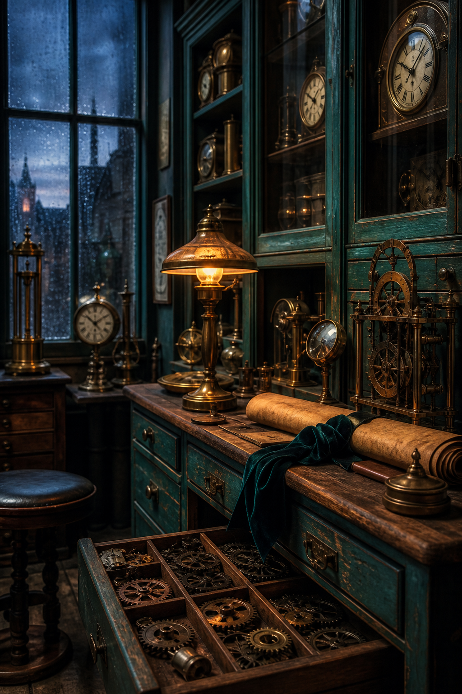
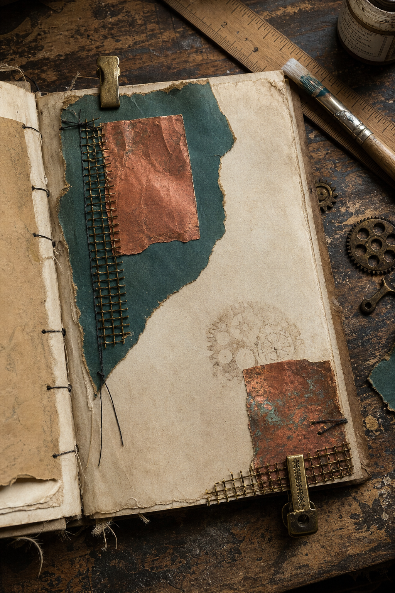
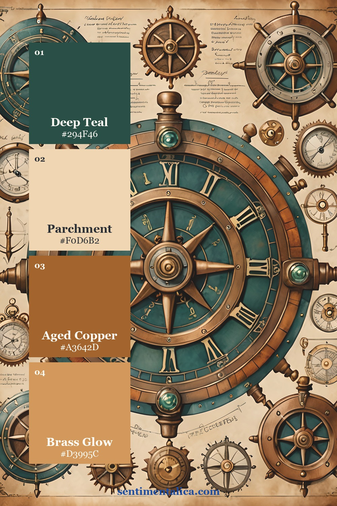
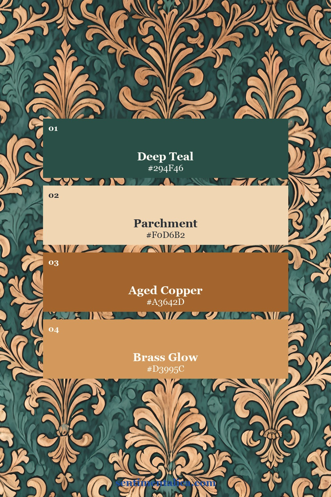
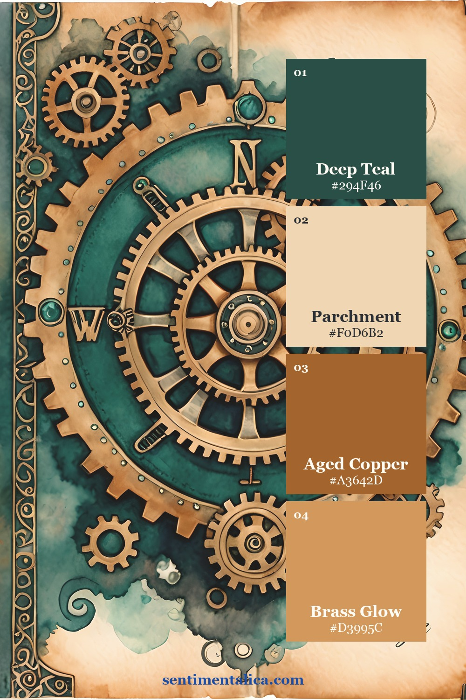
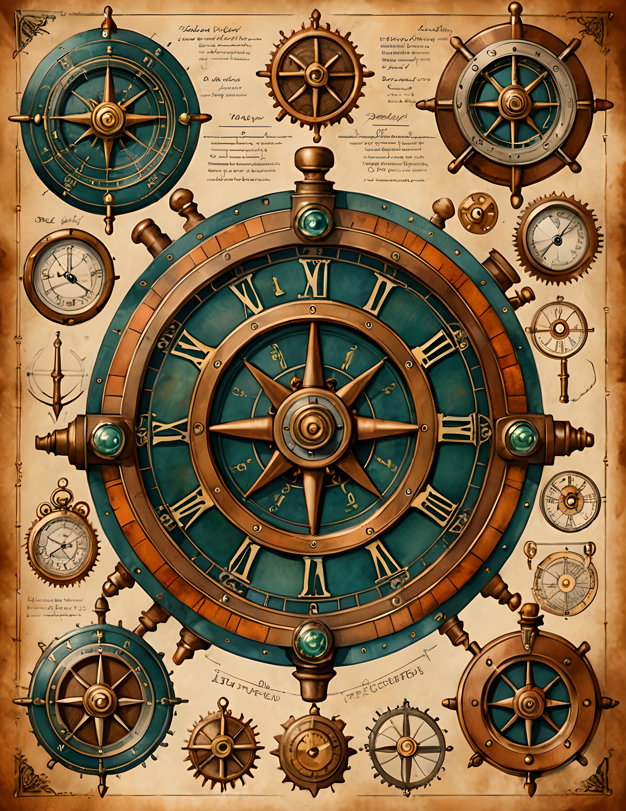
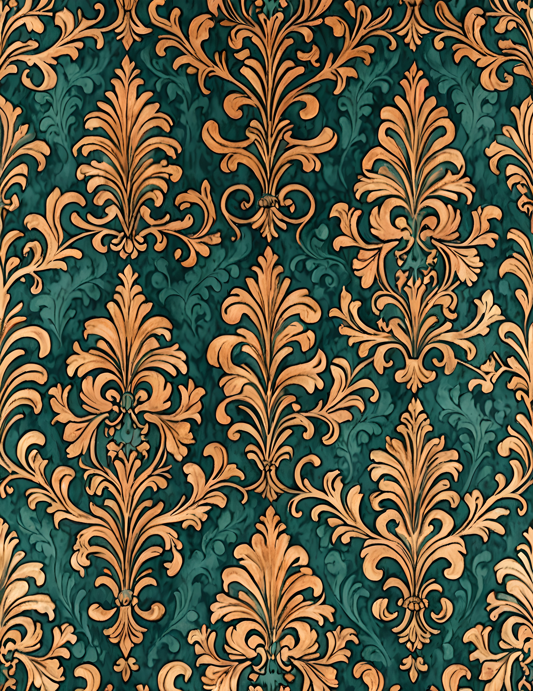

Steampunk pages often begin with brown paper and keep adding brown until every gear disappears. Copper and teal create a clearer structure. Copper supplies warmth, teal supplies depth, parchment supplies breathing room, and brass adds a final glint.
Begin with parchment, not brown
Choose a light parchment base before adding metal colors. It gives gears, clock faces, and dark papers a visible edge. If the background already looks heavily stained, use clean cream labels and pale torn paper to recover some light.

Think of copper as a warm accent rather than the default background. One copper rectangle, gear rubbing, ribbon, or waxed edge can carry the material story without turning the whole page rust-colored.
Let teal create the depth
Deep teal behaves like a dark neutral while still feeling more interesting than black. Use one generous teal layer beneath the focal cluster, then repeat it once in a much smaller scrap. The cooler hue makes copper look warmer and brass look brighter.
Brass Gears is built around this copper-and-teal relationship, with Victorian machinery, clockwork objects, navigation details, decorative patterns, and aged paper. It offers a clear source palette before you add personal labels and materials.
Keep copper and brass in different roles
Copper is the broader warm midtone. Brass is the highlight. If both appear in equal amounts, they merge into one orange-brown field. Use copper paper or imagery for medium shapes, then reserve brass for clips, mesh, thread, or one small glint.

Build the composition in four passes: parchment base, teal anchor, copper structure, brass details. Leave at least one third of the page calm enough for the eye to rest or for handwriting to remain readable.
Test metal colors in the light you will use
Copper paper, metallic paint, and printed copper can look like three different colors. Arrange them beside the teal layer under ordinary room light before attaching anything. Keep the copper sample that reads warm but not orange, then remove the others. Too many metallic finishes can make a small page feel like a materials catalogue.
If you are printing the artwork at home, compare a draft on bright white paper with one on warm cream paper. White keeps teal clear and cool. Cream softens teal and makes copper appear older. Choose the paper that supports the story, then use that same paper family across labels and writing spots.
Use dark ink sparingly. Brown-black stitching or stamping can outline the focal cluster, but a thick black border may overpower the teal. A narrow line, a few typed words, or one postal mark is usually enough definition.
Three clockwork palette studies
The compass page places teal inside circular copper forms. The pattern page reverses that balance, letting teal dominate while copper repeats. The cover composition uses parchment to separate several gear shapes. Each approach keeps the same four colors but changes their proportions.



If you want one organic detail to soften the machinery, choose a cream botanical from the 100 free floral pictures. Keep it pale and small so it acts like texture, not a second theme.
See the palette in real pages


A steampunk palette feels richer when every metal has a purpose. Let teal provide the shadow, copper provide the structure, brass provide the shine, and parchment keep every detail visible. Find more color and layering ideas in the Sentimentalica journal.